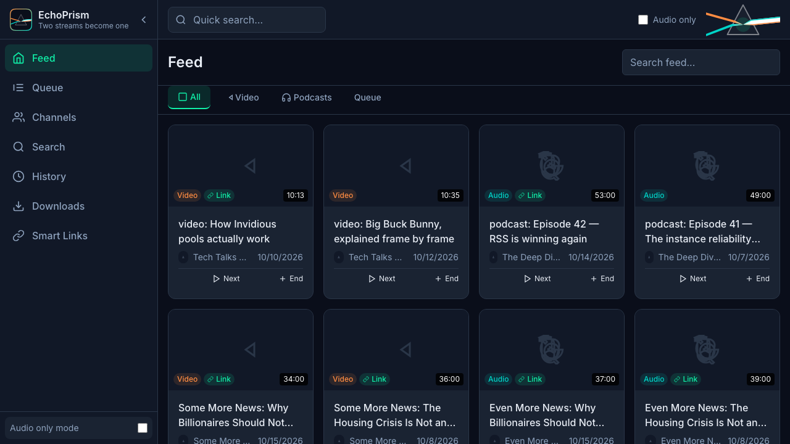
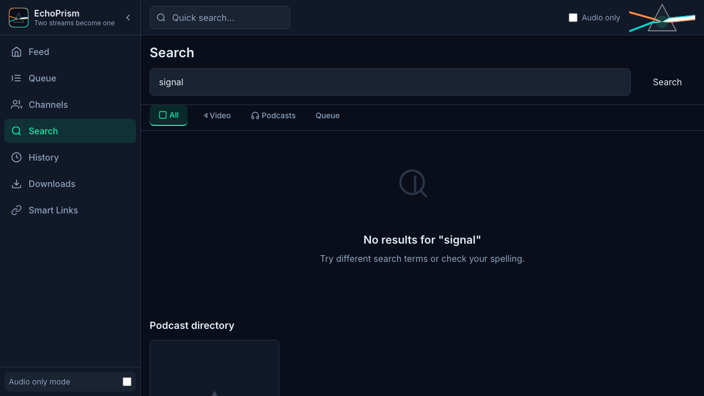

EchoPrism puts YouTube videos and podcast episodes in one library, one queue, one player — and its smart links pair the two streams of the same show, so a story you started on video continues as audio on your walk.
Build it from source

Videos and podcast episodes live side by side with their type visible — watch or listen, your choice per show.
Episodes of the same story on both streams are paired automatically and reviewed by you, so switching streams keeps your place in the story.
Search Apple's podcast directory, subscribe, and every new episode lands in your feed.
Search runs through the instances you configure with the local yt-dlp binary as a guaranteed fallback.
The app is free, open source (MIT) and built from source — no signing identity, no installer wizard:
git clone https://github.com/haiggoh/echoprism cd echoprism scripts/build-from-source.sh
The script checks prerequisites, builds the app bundle and a dmg, and
prints where everything landed. Unsigned build: right-click the app and
choose Open on first launch, or run
xattr -cr /Applications/EchoPrism.app.
A Homebrew cask and GitHub Releases binaries follow the first tagged release — the build workflow is already in the repository.
No account, no telemetry, no analytics. Your library lives in a local SQLite database; crash captures are local-only and filing one is your own, opt-in browser action with a stripped report. Full details: docs/PRIVACY.md.